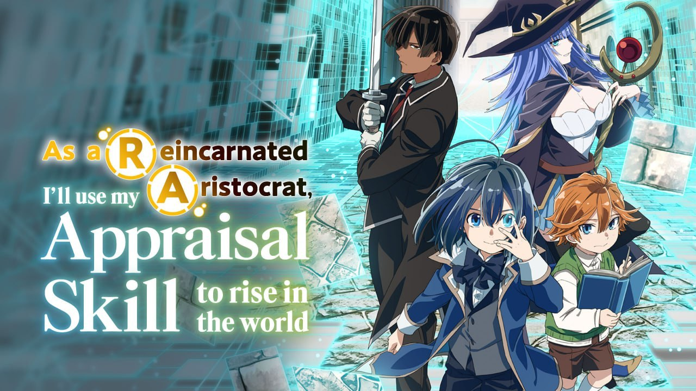
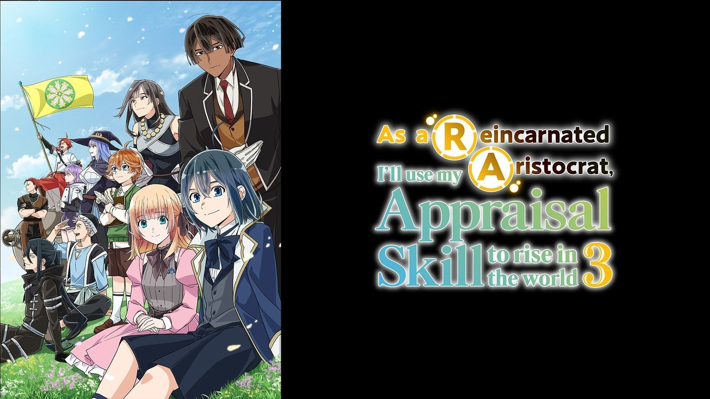

As a Reincarnated Aristocrat - Complete Guide to Season 1-3

Last updated: 11 October 2026



Three seasons, three arcs, one very long title. If you are about to start As a Reincarnated Aristocrat, I'll Use My Appraisal Skill to Rise in the World - or you watched Season 1, drifted away and want to jump back in - this is the single page you need. It covers the whole story so far, what each season is actually about, who everyone is, and how the three seasons compare.
The series in one paragraph
A Japanese salaryman dies at his desk and is reborn as Ars Louvent, the young son of a minor noble house in a medieval fantasy world. Ars is physically weak and not especially clever. What he has is the Appraisal skill: the ability to look at any person and read their hidden talents and aptitudes. Rather than trying to become strong himself, Ars uses Appraisal to find gifted people nobody else has noticed - and builds a house, then an army, then a district, out of other people's potential. Across three seasons the story moves from a small estate to a succession war to running an entire province.
Series overview
- Japanese title: Tensei Kizoku, Kantei Skill de Nariagaru
- Source: Light novel by Miraijin A, illustrated by Jimmy (Kodansha); also a manga adaptation by Natsumi Inoue
- Anime: Season 1 - April to June 2024 | Season 2 - September to December 2024 | Season 3 - from September 2026 (airing)
- Studios: Studio Mother (Seasons 1-2), GeyeG Pictures (Season 3)
- Director: Takao Kato throughout
- Streaming: Crunchyroll worldwide outside East Asia
Season by season
Season 1 - Reincarnation and the slow build
12 episodes, April to June 2024. Ars discovers his skill as a three-year-old, recruits the servant Rietz, then a mage, then more. The back half turns political: the governor is assassinated, a succession crisis opens between his two sons, and Ars's father Raven falls gravely ill, forcing Ars to take over House Louvent far too young. The season ends with a mock battle over Mireille Grangeon's future and Ars aligning with Couran Salamakhia.
What it is really about: learning that talent is worthless without loyalty, and that good intentions do not survive a rigid class system.
Our score: 8.0 / 10 | MyAnimeList: ~7.15
Season 2 - War and the Missian campaign
12 episodes (13-24), September to December 2024. Couran's faction goes to war with Vasmarque over the duchy of Missian. Ars is sent to negotiate, then to fight. Fort Vakmakro, Castle Samkh, Castle Rolto, Castle Staatz and finally Verzud - each one a distinct problem solved with planning rather than power. Rietz finally gets his duel, Mireille proves indispensable and untrustworthy in equal measure, and Thomas plots to assassinate Couran directly.
What it is really about: what happens when a person whose only weapon is other people is handed a war. Ars has to command, not just appraise.
Our score: 8.3 / 10 | MyAnimeList: 7.42
Season 3 - Canarre, and the new chapter
Airing now, from 27 September 2026. Ars is recognised for his service in the Missian war and appointed headman of Canarre. He is no longer a minor lord or a battlefield commander - he is responsible for a whole district. Almost immediately, Seitz province - allied with Basamark - marches a large army at Canarre to try to cut it away from Couran's forces.
What it is really about: responsibility at scale. Governing, not conquering.
Our score: 8.1 / 10 (provisional) | AniList: ~71-73%
Full timeline
- Season 1, eps 1-4: Ars discovers Appraisal, recruits Rietz and begins the talent hunt.
- Season 1, eps 5-8: The governor is assassinated; Raven falls ill and dies; Ars becomes lord of House Louvent.
- Season 1, eps 9-12: Succession standoff, Couran's invitation, Mireille joins, the mock battle.
- Season 2, eps 13-15: War council at Semplar; the Summerforth negotiation; Paradille secured; invasion declared.
- Season 2, eps 16-18: Fort Vakmakro and Castle Samkh taken; the next campaign begins.
- Season 2, eps 19-21: Castle Rolto hostage rescue; heavy losses; Thomas targets Couran.
- Season 2, eps 22-24: Castle Staatz; Rietz versus Braham Joe; the battle for Verzud; the new status quo.
- Season 3, ep 25: Ars becomes headman of Canarre.
- Season 3, ep 26: Seitz marches on Canarre.
- Season 3, ep 27+: The Canarre campaign - ongoing.
Who's who
- Ars Louvent - the protagonist. Weak body, Appraisal skill, endless patience. Grows from a child lord into a district governor.
- Rietz Mouses - Ars's first recruit. A servant class nobody looked at twice; one of the best warriors in the region. His duel in Season 2 is the payoff of the whole premise.
- Charlotte Wraith - one of Ars's earliest and closest allies, and a steady presence across all three seasons.
- Rosell - strategist and increasingly Ars's conscience on the battlefield. Her doubts about his plans are usually correct.
- Mireille Grangeon - introduced at the end of Season 1. Brilliant, unpredictable and never fully trustworthy. The series' best wildcard.
- Raven Louvent - Ars's father. His illness and death in Season 1 is the emotional turning point of the series.
- Couran Salamakhia - the elder son of the murdered governor. Ars's patron and the man whose ambitions drive Seasons 2 and 3.
- Licia - the political operator whose negotiation skills carry the Summerforth talks in Season 2.
- Lenge - Couran's son. Reckless, entitled, and the clearest example of why Appraisal cannot fix judgement.
- Thomas - Mireille's long-standing rival and the architect of the assassination plot against Couran.
- Lupa - whose reunion with his wife in Season 2 episode 20 gives the war its human cost.
All three seasons compared
- Best season: Season 2. Better pacing, real stakes, and the strongest payoff for the show's central premise.
- Best episode: Season 1 episode 7 ("Succession") for emotion; Season 2 episode 19 ("The Threat of Castle Rolto") for tension.
- Slowest start: Season 1 episodes 1-3. Push through them.
- Biggest risk: cast size. Each season adds more people than the last, and not all of them stay relevant.
- Consistent strength: the show never cheats. Ars does not become a fighter, and Appraisal never becomes a superpower.
Where to start
If you are new: start at Season 1 episode 1 and commit to four episodes. The opening is slow by design, and the story genuinely begins around episode 4.
If you stopped early: finish Season 1, then go straight into Season 2. Season 2 is where the series becomes worth recommending, and it does not require you to rewatch anything.
If you only want the current arc: Season 3 stands reasonably well on its own, but you will miss the weight of Ars's promotion without Season 2.
Is it worth watching?
Yes - with the caveat that it is a political fantasy, not a power fantasy. If you want a protagonist who wins fights, this is not that show. If you want a story about a person with one unusual ability using it to build something larger than himself, told with patience and real political texture, this is one of the better examples of the genre in recent years.
It is also, notably, a reincarnation story that does not waste its reincarnation. Ars's modern-world knowledge matters far less than his ability to recognise worth in people who have been told they have none. That is a more interesting idea than most isekai attempt.
FAQ
How many episodes are there in total? 24 across Seasons 1 and 2, plus Season 3 which is airing now.
Why did the studio change for Season 3? GeyeG Pictures took over from Studio Mother in September 2026, with the same staff retained. On screen, the transition has been seamless.
Is it finished? No. Season 3 is currently airing, and the light novel is still ongoing.
Where can I watch it? Crunchyroll has the series worldwide outside East Asia.
Should I read the light novel instead? The anime follows the light novel reasonably closely. If you want the full political detail, the novels go considerably deeper.
Promotional artwork belongs to its original rights holders and is used here for review and commentary. Sources: Wikipedia series and episode lists; MyAnimeList, AniList and Simkl community scores; official Japanese broadcast announcements. Scores are community-reported and change over time.